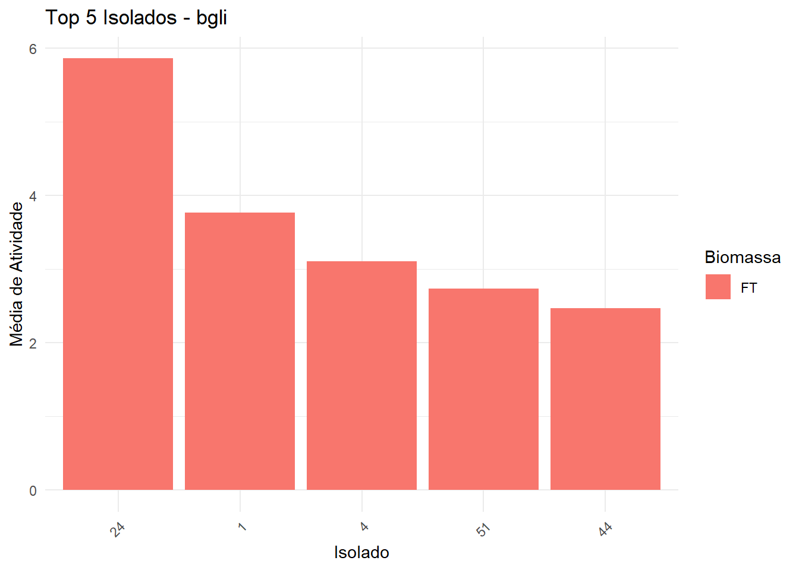
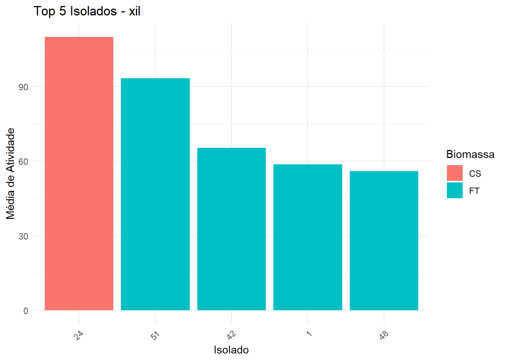
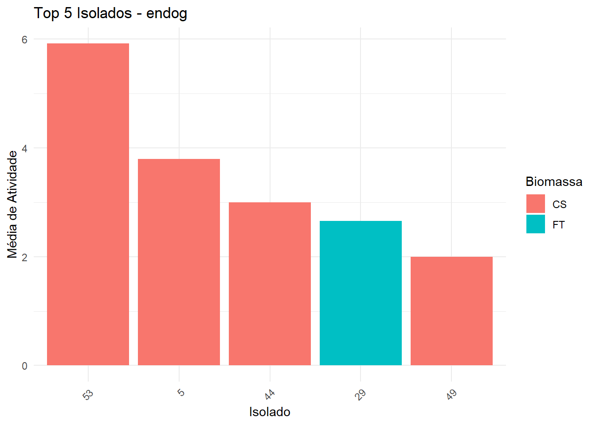
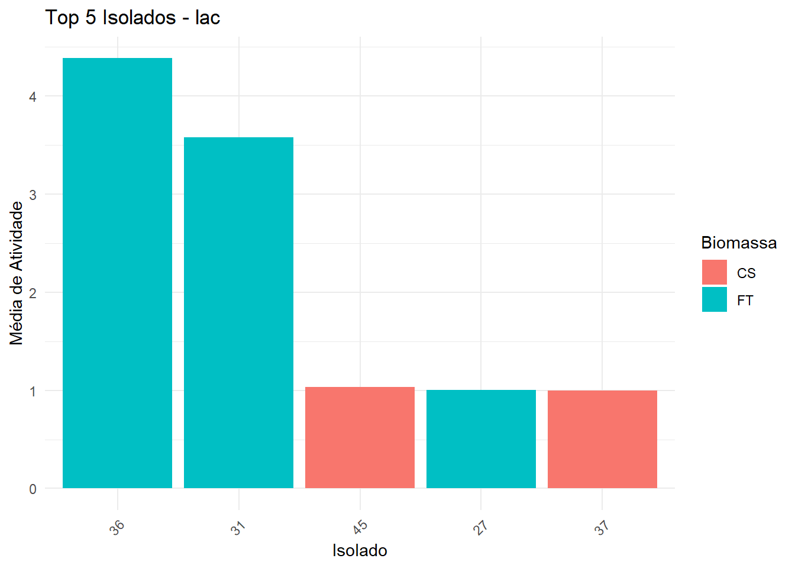
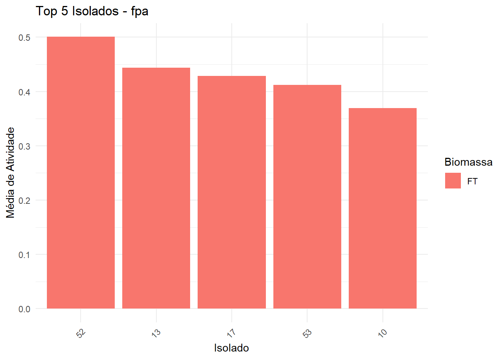
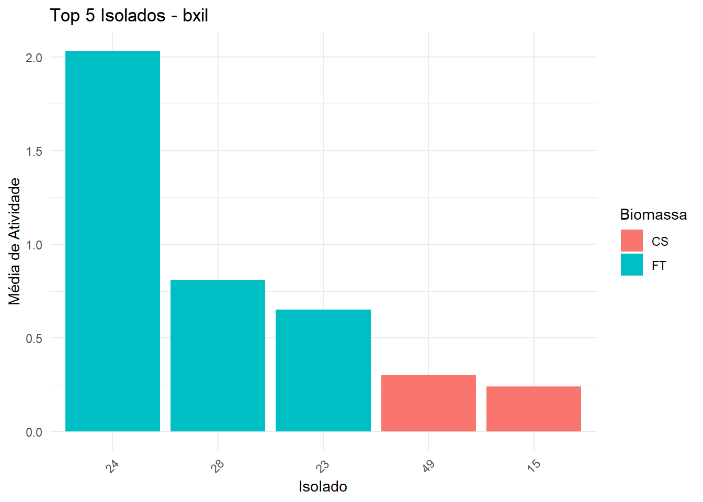
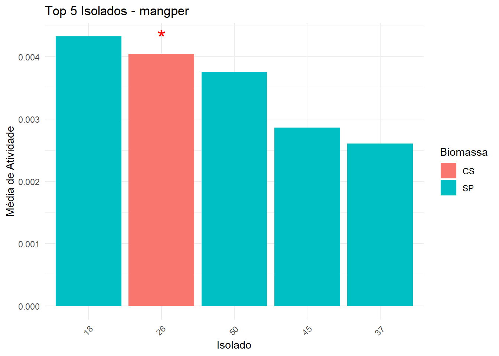
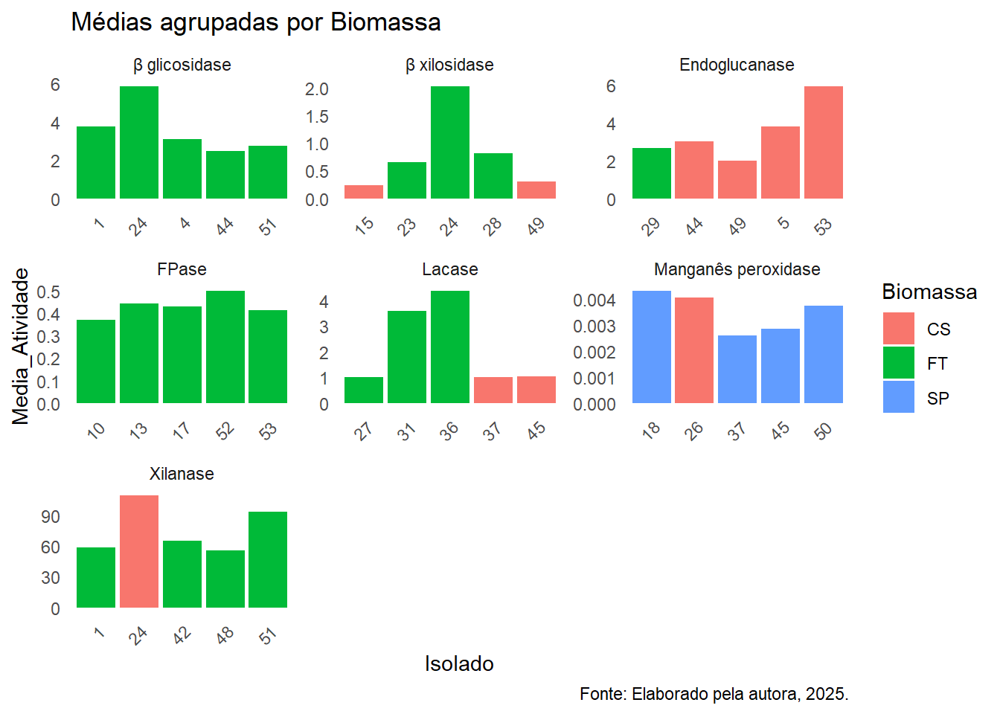

ANÁLISE ESTATÍSTICA PARA AS ATIVIDADES ENZIMÁTICAS
Delineamento Experimental e Conjunto de dados:
Nossos dados comportam a atividade enzimática da coleção fúngica CMPC coletados no Sul do Brasil.
A planilha excel contém dados de 53 isolados induzidos em 3 diferentes substratos, dos quais vamos quantificar a expressão de 7 enzimas.
2 réplicas por isolado, cada uma com 3 erlenmeyers.
📊 Metodologia estatística aplicada:
Seleção dos melhores produtores utilizando apenas média simples
Essa seleção foi feita utilizando apenas as maiores atividades médias por enzima desconsiderando o fator biomassa:
Esse código exporta a tabela de maiores médias demonstrando (enzima + isolado + média de atividade+ biomassa) + gráfico de barras empilhadas por enzima analisada.
Os seguintes objetos são mascarados por 'package:stats':
filter, lag
Os seguintes objetos são mascarados por 'package:base':
intersect, setdiff, setequal, union
library(ggplot2)library(openxlsx)# Ler os dadosdados <-read_excel("at_enz.xlsx")# Calcular média de atividade por Enzima, Isolado e Biomassamedia_atividade_com_biomassa <- dados %>%group_by(Enzima, Isolado, Biomassa) %>%summarise(Media_Atividade =mean(Atividade, na.rm =TRUE), .groups ="drop")# Calcular a média geral por Enzima e Isolado (sem considerar biomassa)media_atividade <- media_atividade_com_biomassa %>%group_by(Enzima, Isolado) %>%summarise(Media_Atividade =mean(Media_Atividade), .groups ="drop")# Selecionar top 3 isolados por enzimatop_isolados <- media_atividade %>%group_by(Enzima) %>%slice_max(order_by = Media_Atividade, n =3) %>%arrange(Enzima, desc(Media_Atividade)) %>%ungroup()# Para cada top isolado, identificar qual biomassa teve maior médiabiomassa_destaque <- media_atividade_com_biomassa %>%semi_join(top_isolados, by =c("Enzima", "Isolado")) %>%group_by(Enzima, Isolado) %>%slice_max(order_by = Media_Atividade, n =1) %>%select(Enzima, Isolado, Biomassa)# Juntar com a tabela finalresultado_final <- top_isolados %>%left_join(biomassa_destaque, by =c("Enzima", "Isolado"))# Exportar para Excelwrite.xlsx(resultado_final, "top_isolados_com_biomassa_destaque.xlsx")# Criar gráficos para cada enzimaenzimas <-unique(dados$Enzima)dir.create("graficos", showWarnings =FALSE) # Pasta para salvar os gráficosfor (enz in enzimas) { dados_grafico <- dados %>%filter(Enzima == enz) %>%group_by(Isolado, Biomassa) %>%summarise(Media =mean(Atividade, na.rm =TRUE), .groups ="drop") p <-ggplot(dados_grafico, aes(x =factor(Isolado), y = Media, fill = Biomassa)) +geom_bar(stat ="identity", position ="stack") +labs(title =paste("Atividade média por biomassa -", enz),x ="Isolado",y ="Atividade Média") +theme_minimal() +theme(axis.text.x =element_text(angle =45, hjust =1))# Salvar gráficoggsave(filename =paste0("graficos/", enz, "_grafico.png"),plot = p, width =8, height =5)}
Seleção utilizando estatística robusta e comparação de médias
Esse código:
Faz análise para cada enzima.
Detecta se ANOVA+Tukey ou Kruskal+Dunn é adequado.
Seleciona top 5 isolados (baseado na média da melhor biomassa).
No gráfico, barras são coloridas pela biomassa da melhor média.
Asterisco vermelho indica isolados significativamente diferentes do melhor isolado.
Exporta uma tabela com isolado, biomassa, média e asterisco.
O seguinte objeto é mascarado por 'package:stats':
filter
library(ggplot2)library(openxlsx)library(patchwork)# Ler os dadosdados <-read_excel("at_enz.xlsx")# Converter variáveis para fatordados <- dados %>%mutate(Enzima =as.factor(Enzima),Isolado =as.factor(Isolado),Biomassa =as.factor(Biomassa),Tubo =as.factor(Tubo),Repeticao =as.factor(Repeticao) )# Objeto para armazenar os melhores isolados por estatística e biomassatabela_melhores <-data.frame()# Loop por enzimafor (enzima inunique(dados$Enzima)) {cat("\n\n===== Enzima:", enzima, "=====\n") subdados <- dados %>%filter(Enzima == enzima)# Calcular média da atividade por Isolado e Biomassa medias <- subdados %>%group_by(Isolado, Biomassa) %>%summarise(Media_Atividade =mean(Atividade, na.rm =TRUE), .groups ="drop")# Para cada isolado, escolher a biomassa com maior média melhores <- medias %>%group_by(Isolado) %>%slice_max(order_by = Media_Atividade, n =1) %>%ungroup()# Ordenar pelo topo 5 isolados melhores <- melhores %>%arrange(desc(Media_Atividade)) %>%slice_head(n =5)# Teste de normalidade shapiro_p <-tryCatch({shapiro_test(subdados, Atividade)$p }, error =function(e) {NA })# Teste de homogeneidade de variâncias (Levene) levene_p <-tryCatch({levene_test(subdados, Atividade ~ Isolado)$p }, error =function(e) {NA })cat("Shapiro-Wilk p-valor:", shapiro_p, "\n")cat("Levene p-valor:", levene_p, "\n")if (!is.na(shapiro_p) &&!is.na(levene_p) && shapiro_p >0.05&& levene_p >0.05) {cat("→ Dados normais e homogêneos: ANOVA + Tukey\n") anova <-aov(Atividade ~ Isolado, data = subdados) tukey <-TukeyHSD(anova) tukey_df <-as.data.frame(tukey$Isolado) tukey_df$Comparacao <-rownames(tukey_df) melhor_isolado <- melhores$Isolado[1]# Isolados que diferem significativamente do melhor isolado comparacoes_relevantes <- tukey_df %>%filter(grepl(melhor_isolado, Comparacao)) %>%mutate(outro_isolado =ifelse(grepl(melhor_isolado, Comparacao),sub(".*-", "", Comparacao),sub("-.*", "", Comparacao)),signif =`p.adj`<0.05 ) isolados_significativos <- comparacoes_relevantes %>%filter(signif ==TRUE) %>%pull(outro_isolado) %>%unique() melhores <- melhores %>%mutate(asterisco =ifelse(Isolado %in% isolados_significativos, "*", "")) } else {cat("→ Dados não normais e/ou heterogêneos: Kruskal-Wallis + Dunn\n") kruskal <-kruskal_test(subdados, Atividade ~ Isolado)print(kruskal) dunn <-dunn_test(subdados, Atividade ~ Isolado, p.adjust.method ="bonferroni") melhor_isolado <- melhores$Isolado[1]# Isolados que diferem significativamente do melhor isolado (p.adj < 0.05) isolados_significativos <- dunn %>%filter((group1 == melhor_isolado | group2 == melhor_isolado) & p.adj <0.05) %>%mutate(outro_isolado =ifelse(group1 == melhor_isolado, group2, group1)) %>%pull(outro_isolado) %>%unique() melhores <- melhores %>%mutate(asterisco =ifelse(Isolado %in% isolados_significativos, "*", "")) }# Gráfico p <-ggplot(melhores, aes(x =reorder(Isolado, -Media_Atividade), y = Media_Atividade, fill = Biomassa)) +geom_col() +geom_text(aes(label = asterisco), vjust =-0.5, size =8, color ="red") +labs(title =paste("Top 5 Isolados -", enzima),x ="Isolado", y ="Média de Atividade", fill ="Biomassa") +theme_minimal() +theme(axis.text.x =element_text(angle =45, hjust =1))print(p)# Adicionar coluna de enzima para exportação melhores$Enzima <- enzima# Juntar na tabela final tabela_melhores <-bind_rows(tabela_melhores, melhores)}
===== Enzima: bgli =====
Shapiro-Wilk p-valor: 1.546154e-40
Levene p-valor: 4.39462e-38
→ Dados não normais e/ou heterogêneos: Kruskal-Wallis + Dunn
# A tibble: 1 × 6
.y. n statistic df p method
* <chr> <int> <dbl> <int> <dbl> <chr>
1 Atividade 954 277. 52 2.16e-32 Kruskal-Wallis

===== Enzima: xil =====
Shapiro-Wilk p-valor: 1.093811e-42
Levene p-valor: 2.79013e-60
→ Dados não normais e/ou heterogêneos: Kruskal-Wallis + Dunn
# A tibble: 1 × 6
.y. n statistic df p method
* <chr> <int> <dbl> <int> <dbl> <chr>
1 Atividade 954 389. 52 4.30e-53 Kruskal-Wallis

===== Enzima: endog =====
Shapiro-Wilk p-valor: 1.553732e-40
Levene p-valor: 1.206932e-42
→ Dados não normais e/ou heterogêneos: Kruskal-Wallis + Dunn
# A tibble: 1 × 6
.y. n statistic df p method
* <chr> <int> <dbl> <int> <dbl> <chr>
1 Atividade 954 217. 52 4.31e-22 Kruskal-Wallis

===== Enzima: lac =====
Shapiro-Wilk p-valor: 1.217409e-51
Levene p-valor: 1.166308e-48
→ Dados não normais e/ou heterogêneos: Kruskal-Wallis + Dunn
# A tibble: 1 × 6
.y. n statistic df p method
* <chr> <int> <dbl> <int> <dbl> <chr>
1 Atividade 954 514. 52 2.90e-77 Kruskal-Wallis

===== Enzima: fpa =====
Shapiro-Wilk p-valor: 3.227648e-28
Levene p-valor: 3.847841e-15
→ Dados não normais e/ou heterogêneos: Kruskal-Wallis + Dunn
# A tibble: 1 × 6
.y. n statistic df p method
* <chr> <int> <dbl> <int> <dbl> <chr>
1 Atividade 954 182. 52 2.3e-16 Kruskal-Wallis

===== Enzima: bxil =====
Shapiro-Wilk p-valor: 2.775456e-50
Levene p-valor: 6.824607e-83
→ Dados não normais e/ou heterogêneos: Kruskal-Wallis + Dunn
# A tibble: 1 × 6
.y. n statistic df p method
* <chr> <int> <dbl> <int> <dbl> <chr>
1 Atividade 954 357. 52 5.36e-47 Kruskal-Wallis

===== Enzima: mangper =====
Shapiro-Wilk p-valor: 2.201043e-49
Levene p-valor: 1.961586e-30
→ Dados não normais e/ou heterogêneos: Kruskal-Wallis + Dunn
# A tibble: 1 × 6
.y. n statistic df p method
* <chr> <int> <dbl> <int> <dbl> <chr>
1 Atividade 954 183. 52 1.63e-16 Kruskal-Wallis

# Exportar tabela final com melhores isolados, biomassa e indicação de significânciawrite.xlsx(tabela_melhores, "melhores_isolados_por_estatistica.xlsx", rownames =FALSE)
Visualização dos melhores isolados
Esse código cria um gráfico facetado com as médias dos melhores isolados por enzima.
# Gráfico facetado com todos os melhores isoladoslibrary(readxl)library(ggplot2)# Ler arquivo Excel - substitua "dados.xlsx" pelo nome do seu arquivodf <-read_excel("melhores_isolados_por_estatistica.xlsx")# Mostrar as primeiras linhas para conferir os dadoshead(df)
# A tibble: 6 × 5
Isolado Biomassa Media_Atividade asterisco Enzima
<chr> <chr> <dbl> <chr> <chr>
1 24 FT 5.87 <NA> bgli
2 1 FT 3.77 <NA> bgli
3 4 FT 3.10 <NA> bgli
4 51 FT 2.74 <NA> bgli
5 44 FT 2.47 <NA> bgli
6 24 CS 110. <NA> xil
# Criar gráfico de barras facetado com eixos independentesnomes_enzyme <-c("xil"="Xilanase","endog"="Endoglucanase","fpa"="FPase","lac"="Lacase","bgli"="β glicosidase","bxil"="β xilosidase","mangper"="Manganês peroxidase")ggplot(df, aes(x = Isolado, y = Media_Atividade, fill = Biomassa)) +geom_bar(stat ="identity", position =position_dodge(width =0.8)) +facet_wrap(~ Enzima, scales ="free", labeller =labeller(Enzima = nomes_enzyme)) +labs(title ="Médias agrupadas por Biomassa",fill ="Biomassa",caption ="Fonte: Elaborado pela autora, 2025." ) +theme_minimal() +theme(axis.text.x =element_text(angle =45, hjust =1),panel.grid.major =element_blank(),panel.grid.minor =element_blank() )

Visualização da identificação a nivel de gênero
Quanto a identificação a nivel de gênero:
# Instalar pacotes, se ainda não tiverif (!require(readxl)) install.packages("readxl")if (!require(ggplot2)) install.packages("ggplot2")library(readxl)library(ggplot2)# 1. Carregar o arquivo Excel# Substitua "arquivo.xlsx" pelo nome real do seu arquivodados_tax <-read_excel("cap1.xlsx", sheet =2)# 2. Verificar as colunas (opcional)head(dados_tax)